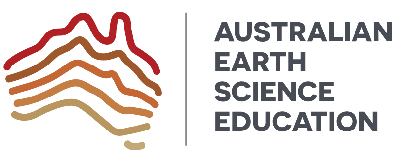

Connecting people with
Earth Science Tasmania
A collective of organisations working together to support Earth science education, experiences and opportunities across Tasmania.
Find What You Need
Choose a pathway to explore opportunities, resources and ways to get involved.
For Teachers
Programs, classroom resources, professional learning, school incursions and university experiences.
Find education opportunities
Support Earth Science
Help us inspire the next generation through sponsorship, partnerships and in-kind support.
Partner with usEducation Pathways
Resources and opportunities for all levels of education.

Primary Schools
AusEarthEd
Engaging Earth science learning experiences for primary students.
Explore
University & Pathways
University of Tasmania
School visits, university experiences, events and pathways.
ExploreExplore Earth Science Tasmania
Discover Tasmania's unique geology, places, resources and community.
Get Involved
Help us share Earth science.
Our events and educational programs rely on enthusiastic people from across the Tasmanian Earth science community.
Register as a volunteerSupport Earth Science Education
Help us inspire the next generation of earth scientists.
Support through funding, sponsorship, equipment, expertise, volunteering and more.
Partner with us Download sponsorship informationStay Connected
What's happening in Earth science?
Sign up for updates on events, opportunities and resources.